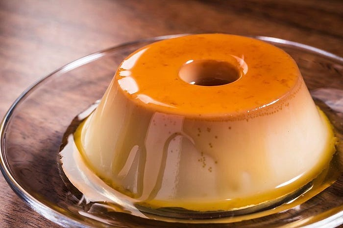

Bem-vindo ao universo das comidas típicas do Brasil!
Descubra os sabores únicos de cada região do nosso país através de pratos tradicionais, suas histórias e curiosidades. Navegue pelas regiões e conheça mais sobre a riqueza gastronômica brasileira!
Imagem: Atribuição da imagem